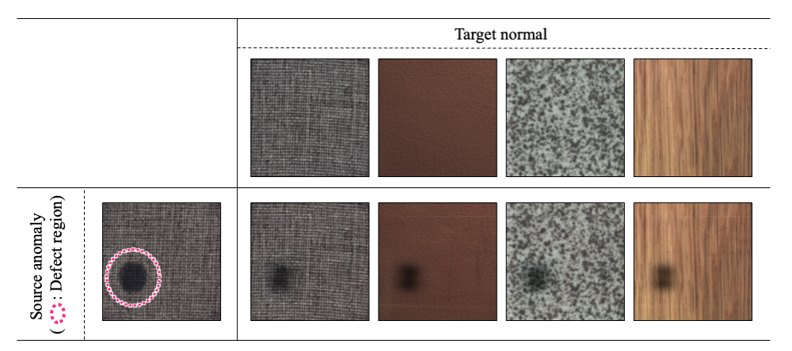

PyTorch C++ Samples
A large-scale open-source project for deep learning implementations in C++ using LibTorch. It covers image classification, object detection, generative models, diffusion-related architectures, and many modern deep learning systems.
This project shows practical implementation skill in serious depth, not just model usage. It reflects long-term work on building and organizing deep learning systems in C++.
View on GitHub →
DRepT
DRepT is a research project for anomaly detection based on transfer of defect representation with a transmittance mask. It focuses on generating and transferring realistic defect characteristics to improve industrial visual inspection.
This project better represents the research side of the portfolio: industrial anomaly detection, pseudo-defect modeling, and practical methods designed for real manufacturing scenarios.
View on GitHub →